분리공정 문제 3 - 분리 효율 구하기
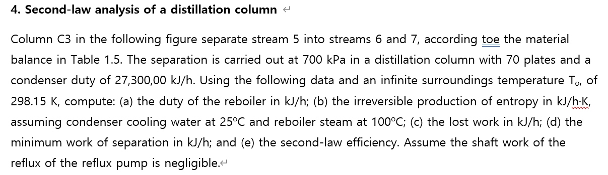
문제 해석해보면, 콜렘 3이 있는데 이게 5를 6, 7스트림으로 분리한다. 이때 테이블 1.5에는 각 스트림의 조성이 있다. 분리는 700카파에서 70플레이트와 27300KJ/H의 콘덴서 듀티로 운영된다. 제시된 데이터와 주변온도 T0 298.15K를 이용해서, (a) 리보일러 듀티와 (b) 비가역 엔트로피 생성량 (25도의 쿨링워터와 100도의 리보일러 스트림) c: 잃은 일 d:최소일 e:2차 효율을 구하여라.
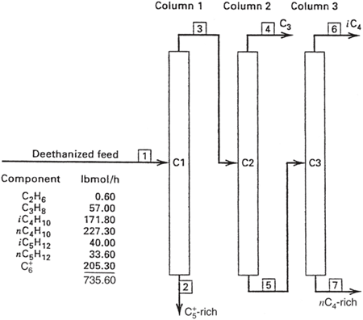
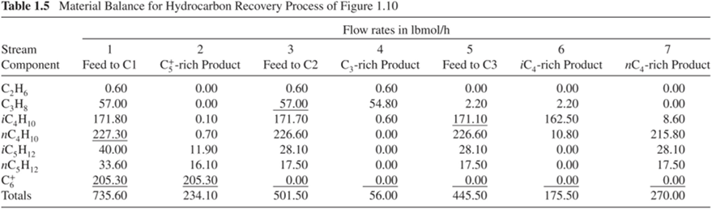 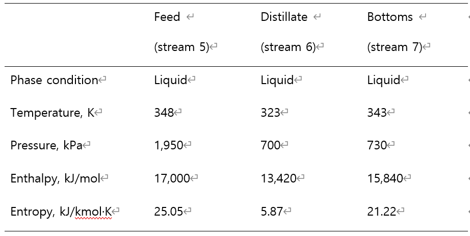
일단 C3 컬럼을 정리해보면
- Feed = stream 5
- Distillate = stream 6
- Bottoms = stream 7
이고 각각의 유량은
- stream 5: 445.50 lbmol/h
- stream 6: 175.50 lbmol/h
- stream 7: 270.00 lbmol/h
각각의 온도와 압력, 엔탈피, 엔트로피 조건이 나와있기 때문에, 이걸 가지고 수지를 세울 수 있다.
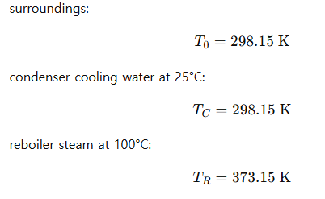
일단 엔탈피 수지를 세우기 전에, lbmol을 kmol로 바꾸도록 하자.
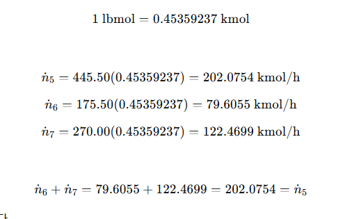
이제 엔탈피 수지를 세우면
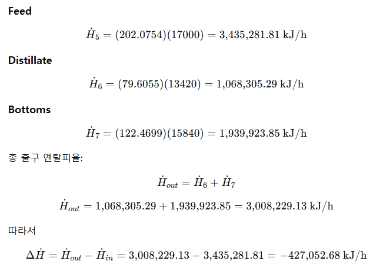
즉 427052kj/h만큼이 빠져나가야 한다?
엔트로피 수지도 세워보면
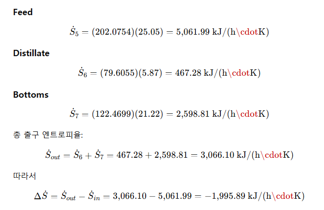
이때 컬럼을 잘 살펴보면, 5가 들어와서 6 7로 나간다. 이때 열은 리보일러에서 공급되고 콘덴서에서 응축되면서 열이 방출된다. 따라서 열 수지를 다음처럼 세울 수 있다.
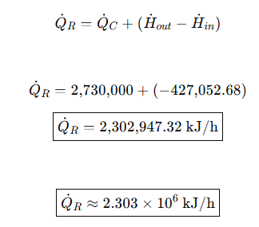
이만큼의 열이 리보일러 듀티로 들어감을 알 수 있다.
(B) 비가역 엔트로피 생성량은 일단 엔트로피 수지에 더해서, 정상상태를 가정해본다.
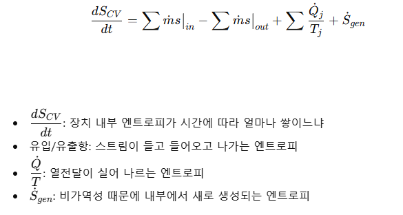
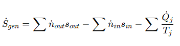 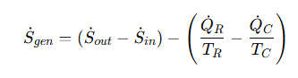
이걸 계산하면 된다.
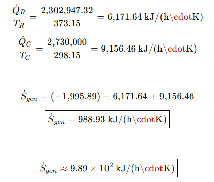
이제 이걸가지고 잃은 일을 계산할거다. 비가역이고 엔트로피 증가했으니, 그만큼 잃은 일이 발생하는데 그건 주위온도와 엔트로피 생성의 곱이다.
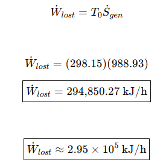
그리고 최소 분리일을 알아보자. 이거는 스트림의 엑서지 차이로 보면 된다. 가역인 분리기에서 최소로 필요한 분리일은 스트림의 엑서지 변화량과 같다.
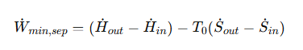 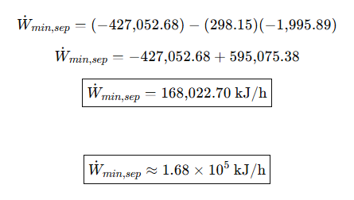
이제 효율을 볼건데, 2법칙 효율은 최소일/ 실제 필요일로 구한다.
이때 최소일/최소일+로스트워크 = 36.28%